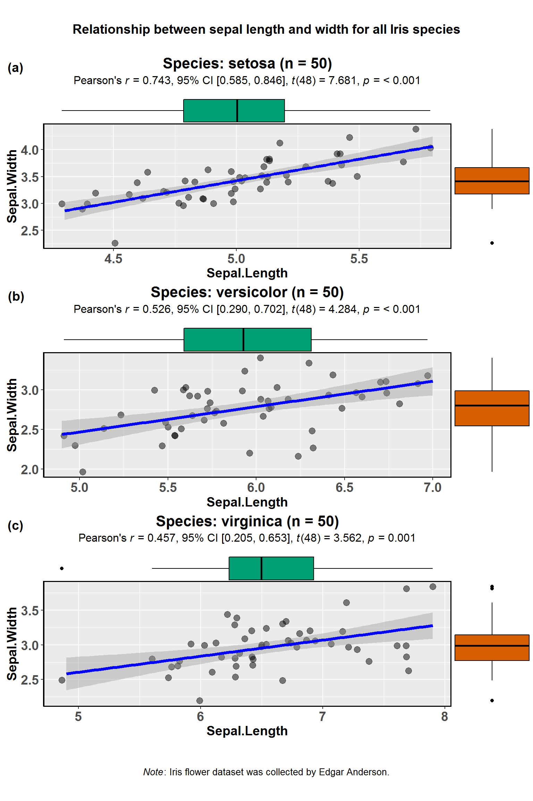
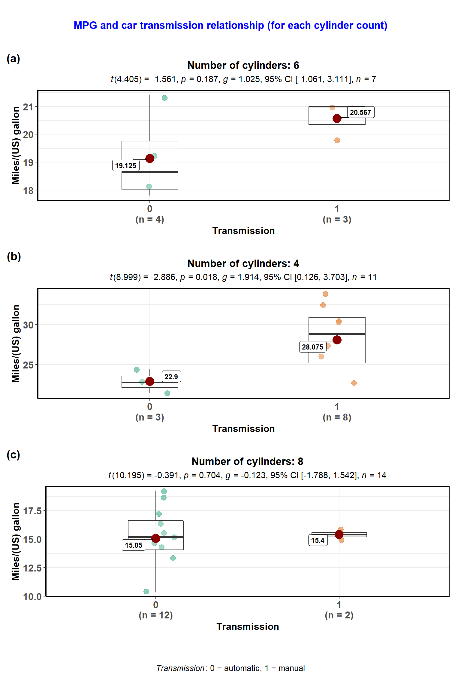
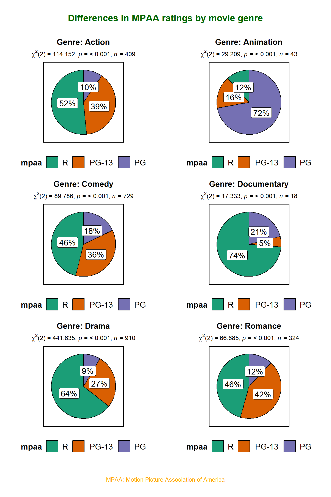
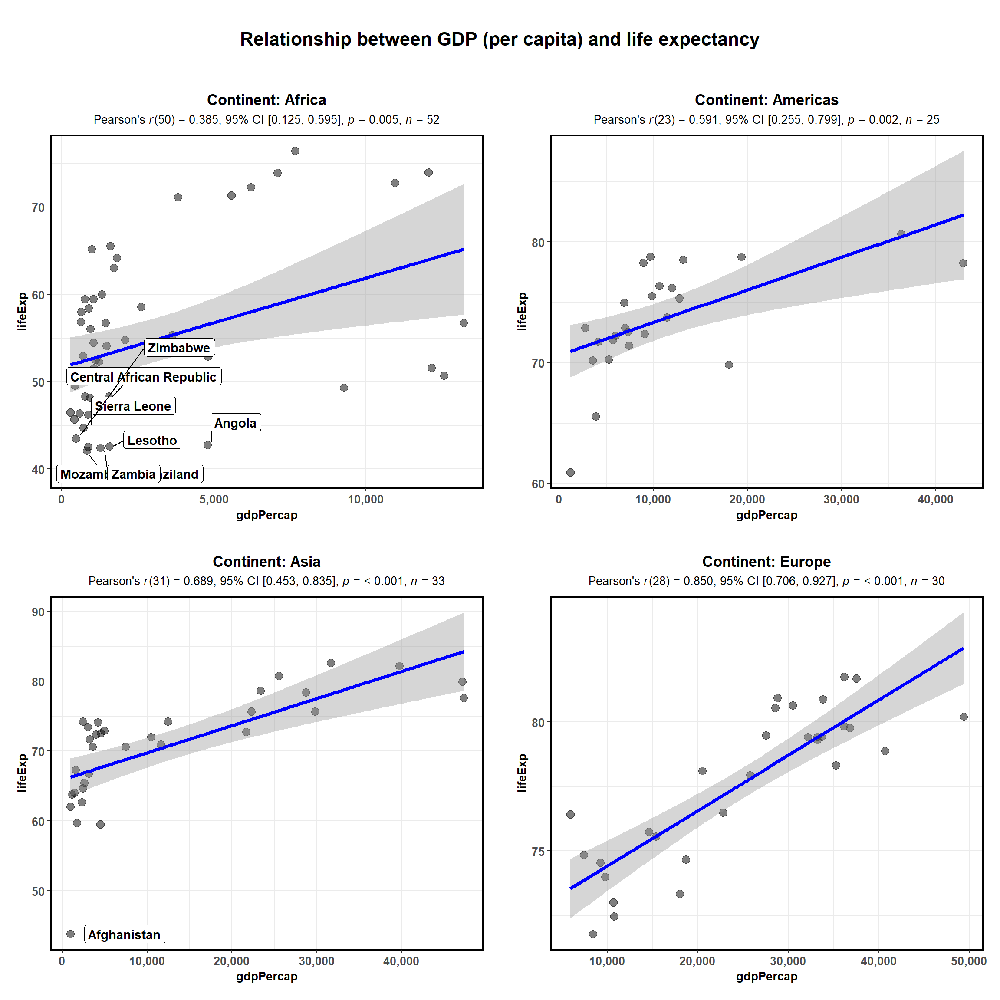
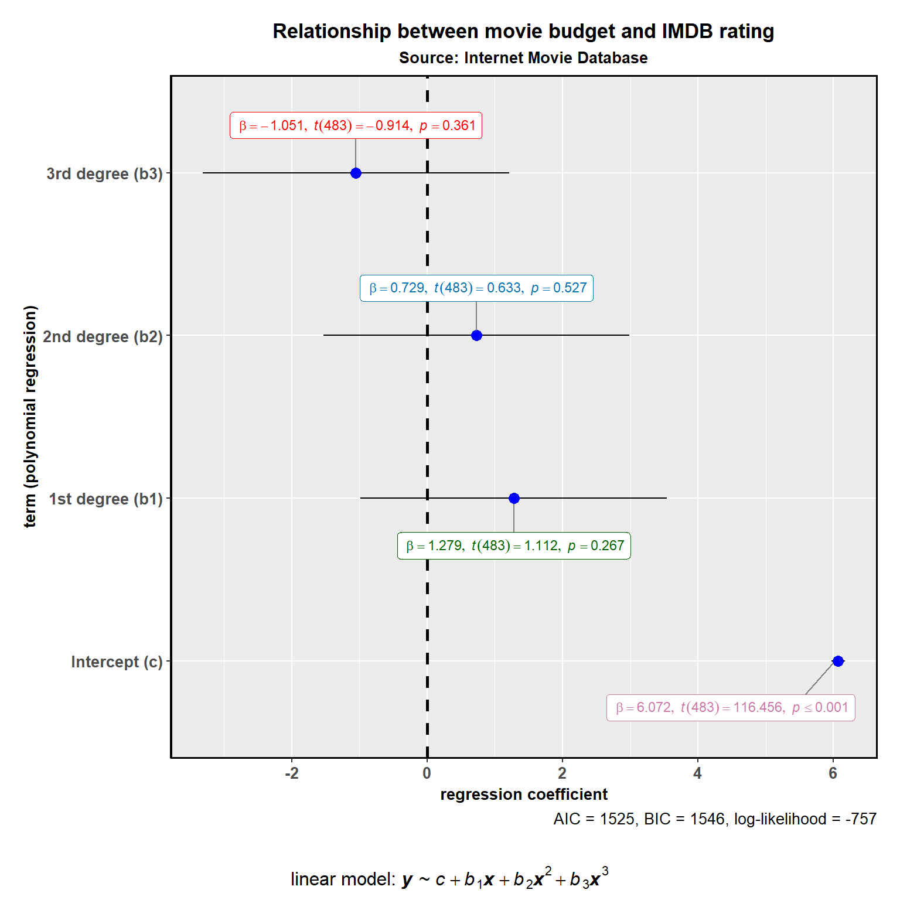

combine_plots
ggstatsplot also contains a helper function combine_plots to combine multiple plots. This is a wrapper around cowplot::plot_grid() and it helps you combine multiple plots and add combination of title, caption, and annotation texts with suitable default parameters. Let’s see some examples below.
Note before: The codes below illustrates the utility of combine_plots for combining multiple plots created with ggstatsplot functions. But, if you have just one grouping variable, it’s not even necessary to use purrr or plyr since the grouped_ variants (https://indrajeetpatil.github.io/ggstatsplot/reference/index.html) of all functions will take care of this for you and rely on the combine_plots function behind the curtains.
purrr
The full power of ggstatsplot can be leveraged with a functional programming package like purrr that replaces many for loops with code that is both more succinct and easier to read and, therefore, purrr should be preferrred.
An example is provided below.
library(glue)
library(dplyr)
library(ggplot2)
### creating a list column with `ggstatsplot` plots
plots <- datasets::iris %>%
dplyr::mutate(.data = ., Species2 = Species) %>% # just creates a copy of this variable
dplyr::group_by(.data = ., Species) %>%
tidyr::nest(data = .) %>% # creates a nested dataframe with list column called `data`
dplyr::mutate( # creating a new list column of ggstatsplot outputs
.data = .,
plot = data %>%
purrr::map(
.x = .,
.f = ~ ggstatsplot::ggscatterstats(
data = .,
x = Sepal.Length,
y = Sepal.Width,
label.var = Species2,
label.expression = Sepal.Length > 7,
xfill = "#0072B2",
yfill = "#009E73",
ggtheme = ggthemes::theme_fivethirtyeight(),
ggstatsplot.layer = FALSE,
messages = FALSE, # turns off all the warnings, notes, and reference messages
marginal.type = "boxplot",
title =
glue::glue("Species: {.$Species2} (n = {length(.$Sepal.Length)})")
)
)
)
### display the new object (notice that the class of the `plot` list column is S3: gg)
plots
#> # A tibble: 3 x 3
#> Species data plot
#> <fct> <list> <list>
#> 1 setosa <tibble [50 x 5]> <S3: ggExtraPlot>
#> 2 versicolor <tibble [50 x 5]> <S3: ggExtraPlot>
#> 3 virginica <tibble [50 x 5]> <S3: ggExtraPlot>
### creating a grid with cowplot
ggstatsplot::combine_plots(
plotlist = plots$plot, # list column containing all ggstatsplot objects
nrow = 3,
ncol = 1,
title.text = "Relationship between sepal length and width for all Iris species",
title.size = 14,
caption.text = expression(
paste(
italic("Note"),
": Iris flower dataset was collected by Edgar Anderson.",
sep = ""
),
caption.size = 12
)
)
Here is another example with ggbetweenstats-
library(dplyr)
library(glue)
### creating a list column with `ggstatsplot` plots
plots <- ggplot2::mpg %>%
dplyr::filter(.data = ., cyl != 5) %>% # there are just 4 observations so leave this one out
dplyr::mutate(.data = ., cyl2 = cyl) %>% # just creates a copy of this variable
dplyr::group_by(.data = ., cyl) %>%
tidyr::nest(data = .) %>% # creates a nested dataframe with list column called `data`
dplyr::mutate( # creating a new list column of ggstatsplot outputs
.data = .,
plot = data %>%
purrr::map(
.x = .,
.f = ~ ggstatsplot::ggbetweenstats(
data = .,
x = year,
y = hwy,
ggtheme = ggthemes::theme_stata(),
ggstatsplot.layer = FALSE,
type = "robust",
package = "yarrr",
palette = "xmen",
messages = FALSE, # turns off all the warnings, notes, and reference messages
xlab = "Type of car",
ylab = "Highway miles/(US) gallon",
title = glue::glue(
"Number of cylinders: {.$cyl2}" # this is where the duplicated cyl2 column is useful
)
)
)
)
### display the new object (notice that the class of the `plot` list column is S3: gg)
plots
#> # A tibble: 3 x 3
#> cyl data plot
#> <int> <list> <list>
#> 1 4 <tibble [81 x 11]> <S3: gg>
#> 2 6 <tibble [79 x 11]> <S3: gg>
#> 3 8 <tibble [70 x 11]> <S3: gg>
### creating a grid with cowplot
ggstatsplot::combine_plots(
plotlist = plots$plot, # list column containing all ggstatsplot objects
nrow = 3,
ncol = 1,
labels = c("(a)","(b)","(c)", "(d)"),
title.text = "Fuel efficiency differences between 1999 and 2008",
title.size = 13,
title.color = "#0072B2",
caption.text = expression(
paste(
italic("Dataset"),
": Fuel economy data from 1999 and 2008 for 38 popular models of car",
sep = ""
),
caption.size = 10,
caption.color = "red"
)
)
plyr
Another popular package for handling big datasets is plyr, where we can repeatedly apply a common function on smaller pieces and then combine the results.
We’ll use the ggpiestats function as an example function and the movies_long dataset from ggstatsplot package. This dataset provides information about movies scraped from IMDB. Let’s say we are interested in figuring out whether the proportion of different types of MPAA ratings a given genre gets differs across genres (for example, Action movie are more likely to get R-rating, while animated movies to get PG rating?).
library(plyr)
library(ggstatsplot)
# for reproducibility
set.seed(123)
# let's have a look at the structure of the data
dplyr::glimpse(x = ggstatsplot::movies_long)
#> Observations: 2,433
#> Variables: 8
#> $ title <fct> Shawshank Redemption, The, Lord of the Rings: The Retur...
#> $ year <int> 1994, 2003, 2001, 2002, 1994, 1993, 1977, 1980, 1968, 2...
#> $ length <int> 142, 251, 208, 223, 168, 195, 125, 129, 158, 135, 93, 1...
#> $ budget <dbl> 25.0, 94.0, 93.0, 94.0, 8.0, 25.0, 11.0, 18.0, 5.0, 3.3...
#> $ rating <dbl> 9.1, 9.0, 8.8, 8.8, 8.8, 8.8, 8.8, 8.8, 8.7, 8.7, 8.7, ...
#> $ votes <int> 149494, 103631, 157608, 114797, 132745, 97667, 134640, ...
#> $ mpaa <fct> R, PG-13, PG-13, PG-13, R, R, PG, PG, PG-13, R, PG, R, ...
#> $ genre <fct> Drama, Action, Action, Action, Drama, Drama, Action, Ac...
# creating a list of plots
plots <- plyr::dlply(
.data = ggstatsplot::movies_long,
.variables = .(genre),
.fun = function(data)
ggstatsplot::ggpiestats(
data = data,
main = mpaa,
title = glue::glue("Genre: {data$genre}")
)
)
# combining individual plots
ggstatsplot::combine_plots(plotlist = plots,
title.text = "Differences in MPAA ratings by movie genre",
title.color = "darkgreen",
caption.text = "MPAA: Motion Picture Association of America",
caption.color = "orange",
nrow = 3,
ncol = 2)
As can be seen from these plots, our hunch was correct: all ratings are not equally likely for any of the genres, for example Dramas and Documentary genre movies most frequently R-rating, while Animations genre movies overwhelmingly get PG rating.
Let’s see another example on how to use plyr to conveniently to repeat the same operation and then use combine_plots. Here we will investigate how Gross Domestic Product (per capita) of a country is related to the life expectancy of her citizens in 2007. We will also see which countries still have very low life expectancy across different continents.
library(plyr)
library(gapminder)
# for reproducibility
set.seed(123)
# let's have a look at the structure of the data
dplyr::glimpse(x = gapminder::gapminder)
#> Observations: 1,704
#> Variables: 6
#> $ country <fct> Afghanistan, Afghanistan, Afghanistan, Afghanistan, ...
#> $ continent <fct> Asia, Asia, Asia, Asia, Asia, Asia, Asia, Asia, Asia...
#> $ year <int> 1952, 1957, 1962, 1967, 1972, 1977, 1982, 1987, 1992...
#> $ lifeExp <dbl> 28.801, 30.332, 31.997, 34.020, 36.088, 38.438, 39.8...
#> $ pop <int> 8425333, 9240934, 10267083, 11537966, 13079460, 1488...
#> $ gdpPercap <dbl> 779.4453, 820.8530, 853.1007, 836.1971, 739.9811, 78...
# creating a list of plots
plots <- plyr::dlply(
.data = dplyr::filter(gapminder::gapminder, year == 2007, continent != "Oceania"),
.variables = .(continent),
.fun = function(data)
ggstatsplot::ggscatterstats(
data = data,
x = gdpPercap,
y = lifeExp,
xfill = "#0072B2",
yfill = "#009E73",
label.var = country,
label.expression = lifeExp < 45,
title = glue::glue("Continent: {data$continent}"),
marginal = FALSE
) +
ggplot2::scale_x_continuous(labels = scales::comma)
)
# combining individual plots
ggstatsplot::combine_plots(plotlist = plots,
title.text = "Relationship between GDP (per capita) and life expectancy",
nrow = 2,
ncol = 2)
This function can also be useful adding some additional text information that can’t be contained in either title, subtitle, or caption. Here is an example: We want to run a polynomial regression and want to annotate the formula.
library(ggstatsplot)
ggstatsplot::combine_plots(
# preparing the plot with ggstatsplot function
ggstatsplot::ggcoefstats(
x = stats::lm(
formula = rating ~ stats::poly(budget, degree = 3),
data = ggstatsplot::movies_long,
na.action = na.omit
),
exclude.intercept = FALSE,
title = "Relationship between movie budget and IMDB rating",
subtitle = "Source: Internet Movie Database",
ggtheme = ggplot2::theme_gray(),
stats.label.color = c("#CC79A7", "darkgreen", "#0072B2", "red")
) +
# modifying the plot outside of ggstatsplot using ggplot2 functions
ggplot2::scale_y_discrete(
labels = c(
"Intercept (c)",
"1st degree (b1)",
"2nd degree (b2)",
"3rd degree (b3)"
)
) +
ggplot2::labs(y = "term (polynomial regression)"),
# adding additional text element to the plot since title, subtitle, caption are all already occupied
sub.text = expression(
paste(
"linear model: ", bolditalic(y),
" ~ ",
italic(c) + italic(b)[1] * bolditalic(x) + italic(b)[2] * bolditalic(x) ^
2 + italic(b)[3] * bolditalic(x) ^ 3,
sep = ""
)
),
sub.size = 12
)
If you find any bugs or have any suggestions/remarks, please file an issue on GitHub: https://github.com/IndrajeetPatil/ggstatsplot/issues